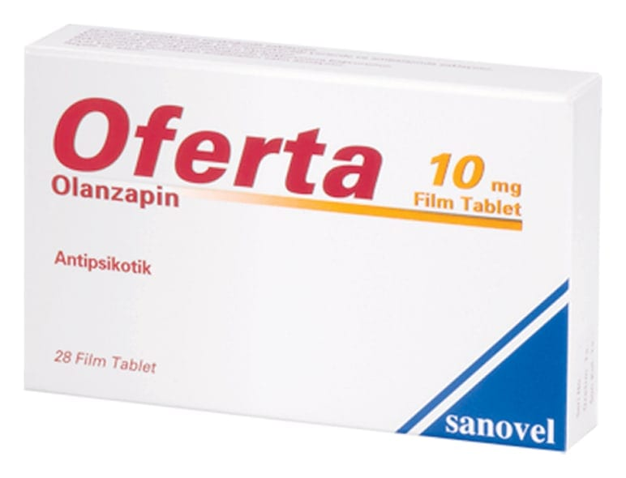

Oferta 10 mg Film Tablet, 84 Tablet

Ne için kullanılır
KT · Bölüm 1OFERTA, 28 ve 84 film kaplı tablet içeren blister ambalajlarda takdim edilir. OFERTA, yuvarlak ve beyaz renkli film kaplı tabletlerdir.
OFERTA olanzapin adlı etkin maddeyi içerir. OFERTA antipsikotikler adı verilen bir ilaç grubuna aittir ve aşağıdaki durumların tedavisinde kullanılır:
• Gerçekte var olmayan şeyleri duymak, görmek veya hissetmek, yanlış inanışlar, anormal şüphecilik, içine kapanmak gibi belirtilerin eşlik ettiği bir hastalık olan şizofreninin tedavisinde kullanılır. Ayrıca bu hastalığı yaşayan hastalar kendilerini depresif, endişeli veya gergin hissedebilirler. • Heyecan ve coşku hali durumları görülen, orta ve şiddetli manik dönemler,
OFERTA’nın manik dönemde (heyecan veya coşku belirtileri olan bir durum) olanzapin tedavisine cevap veren bipolar bozukluğu (ruhsal durumdaki zıt yönlü değişiklikler) olan hastalarda, bu belirtilerin tekrar oluşmasını önlediği gösterilmiştir.
OFERTA benzer durumların tedavisi için hekimin uygun gördüğü durumlarda 13-17 yaş arasındaki ergen hastalarda da kullanılabilir.